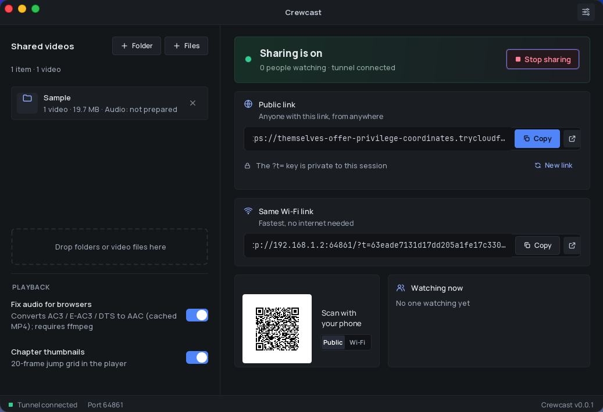
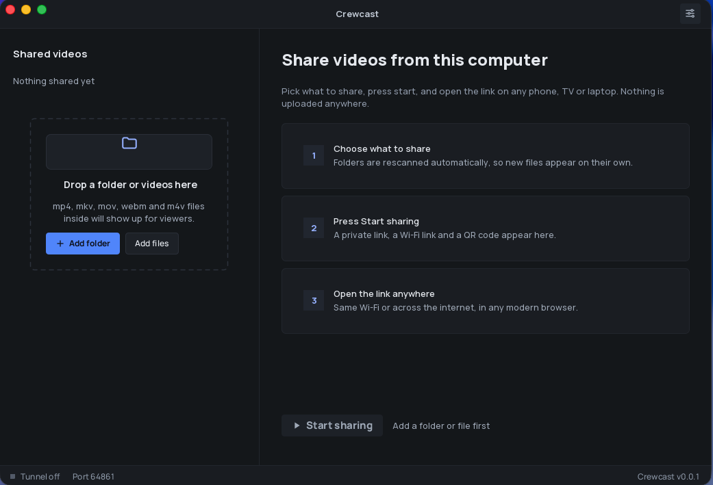
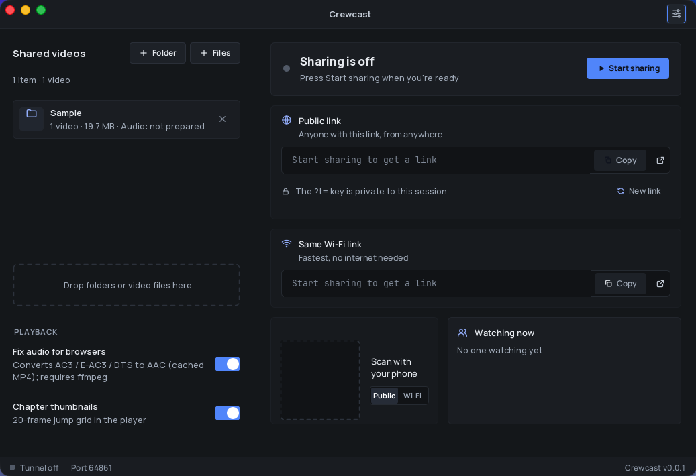

Share videos from your computer. Watch on any screen.
Turn any folder into a private streaming link for phones, TVs and laptops, on your Wi‑Fi or over the internet. No upload, no account, no cloud storage.
Choose your platform below, or use the arrow

Up and running in three steps
Nothing to install for your viewers. They just open a link.
Add your videos
Pick a folder or a few files on your computer. They never leave it.
Start sharing
Crewcast creates a private link for anywhere, plus a link and QR code for your Wi‑Fi.
Send the link
Viewers open it in any browser and tap a video to watch. Nothing to install on their side.
Everything a movie night needs
Built for sharing your own videos with friends and family, on the same Wi‑Fi or across the world.
Public link, anywhere
An HTTPS link through a Cloudflare tunnel, set up automatically. No router settings.
Same Wi‑Fi link and QR code
Fast local streaming for phones and TVs in the room. Scan and play.
Private access key
Links carry a key for this session. New link turns the old one off instantly.
Plays in any browser
Phones, tablets, laptops and smart TVs. Viewers install nothing.
Audio fix and subtitles
Converts audio browsers can’t play, with a language picker and embedded or sidecar subtitles.
TV and projector mode
Optional H.264 conversion for screens that can’t play 10‑bit HEVC.
Downloads
Let viewers download a file, or a whole folder as one zip.
Free, open source, private
MIT licensed. No accounts, no analytics, nothing phones home.


Download Crewcast
Java is included, so there's nothing else to install. The buttons always get the latest version.
All releases · SHA256 checksums · Linux arm64 and .rpm aren't available yet
How to install
About two minutes. The installers aren't signed with a paid Apple or Microsoft certificate yet, so your computer warns you once. These steps show how to get past that safely.
-
1
Check which Mac you have
Apple menu → About This Mac. "Chip: Apple M1–M4" means Apple Silicon; "Processor: Intel" means Intel.
-
2
Download and install
Open the .dmg from Downloads and drag Crewcast onto the Applications folder. Then eject the Crewcast disk.
-
3
Allow it to open (one time only)
The app isn’t signed yet, so macOS blocks the first open. Paste this into Terminal, or use System Settings → Privacy & Security → Open Anyway.
xattr -dr com.apple.quarantine /Applications/Crewcast.app -
4
Open Crewcast
Open it from Applications or Launchpad. If macOS asks about incoming network connections, click Allow so phones and TVs can connect.
-
1
Download
If the browser says the file isn’t commonly downloaded, choose Keep.
-
2
Run the installer
Open Crewcast-windows-x64.msi from your Downloads folder.
-
3
Get past SmartScreen (one time only)
If you see “Windows protected your PC”, click More info, then Run anyway.
-
4
Finish the installer
Click Next, keep the default folder, then Install. Click Yes if Windows asks for permission, then Finish.
-
5
Open Crewcast
Use the desktop shortcut or the Start menu. If the firewall asks, tick Private networks and click Allow access.
-
1
Download
Get Crewcast-linux-x64.deb (Debian, Ubuntu, Linux Mint, 64-bit).
-
2
Install
Open a terminal (Ctrl + Alt + T on Ubuntu), run this and enter your password. The ./ matters.
cd ~/Downloads && sudo apt install ./Crewcast-linux-x64.deb -
3
Open Crewcast
Find Crewcast in your app menu (Activities → search “Crewcast”, or Sound & Video). You can also run /opt/crewcast/bin/crewcast.
Questions
Is Crewcast free?
Yes. It’s free and open source under the MIT license.
Are my videos uploaded anywhere?
No. Files stay on your computer and stream straight from it while sharing is on. The public link passes through a Cloudflare tunnel, but nothing is stored there.
Who can watch?
Anyone with the full link while sharing is on. With Require private key on (the default), links carry a key; New link or stopping sharing cuts everyone off.
Does my computer need to stay on?
Yes, it’s the server. Turn on Keep computer awake while sharing to stop it from sleeping.
Why does my computer warn me on first open?
The installers aren’t signed with a paid Apple or Microsoft certificate yet. They’re built in public by GitHub Actions from the source code, and you can check them against SHA256SUMS.txt.
Will it play on my TV?
Most smart TV browsers work. If a TV or projector shows a black or garbled picture with 10‑bit HEVC files, turn on compatibility mode.
Do you collect any data?
No accounts and no analytics. See the privacy policy for details.